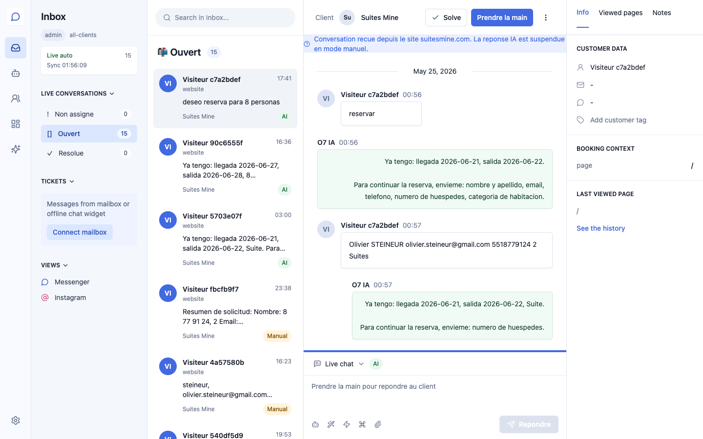
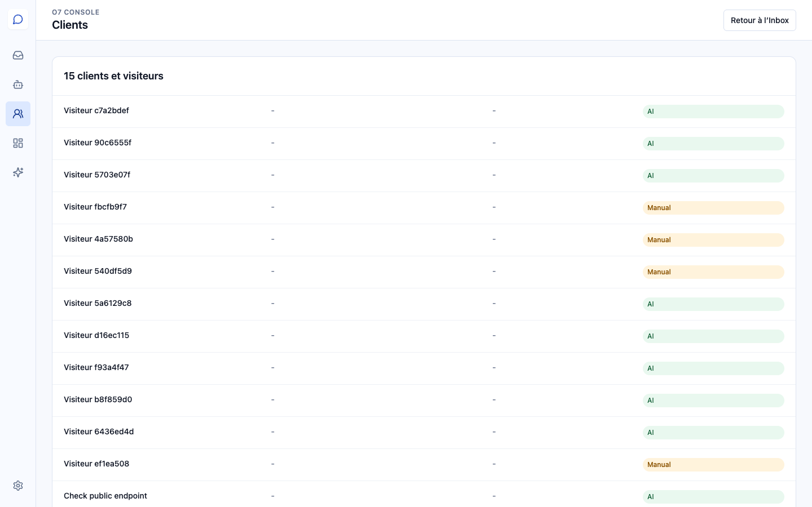
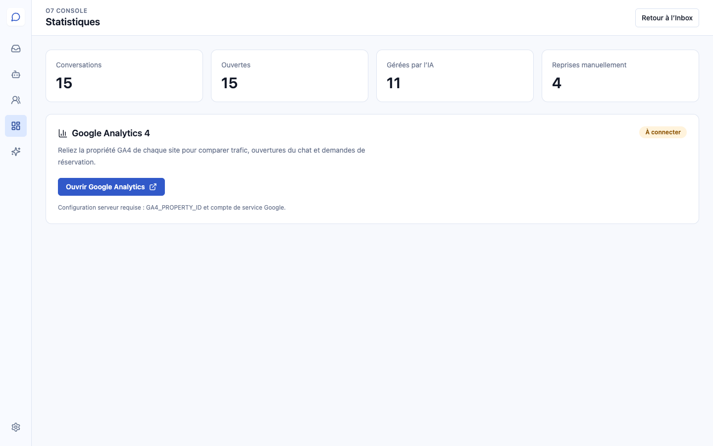
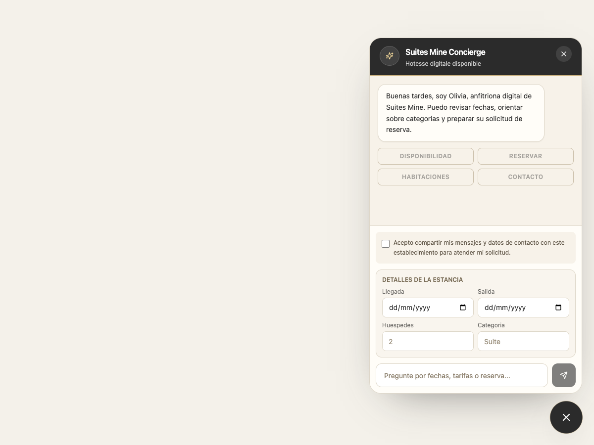

Conversaciones, automatizaciones de IA, clientes, estadísticas y seguridad en un único espacio.
Versión para clientes · 30 de junio de 2026
Bienvenido a O7 Console
O7 Console centraliza las conversaciones del sitio web, la intervención manual, el seguimiento de visitantes, las estadísticas y las integraciones.
Cada cliente dispone de su propio espacio y solo puede ver las conversaciones y estadísticas asociadas con su sitio.
Navegación principal
InboxLeer, retomar y cerrar conversaciones.
AutomatizacionesConsultar las funciones gestionadas por la IA.
ClientesEncontrar visitantes y datos de contacto.
EstadísticasSupervisar la actividad y conectar GA4.
Copiloto IAGenerar un informe de las conversaciones.
ConfiguraciónGestionar integraciones, perfil y 2FA.
1. Bandeja de entrada

Bandeja de entrada y detalle de una conversación.
Seleccione una conversación en la columna central.
Prendre la main pausa la IA y permite que un operador responda.
Rendre à l’IA reactiva las respuestas automáticas.
Solve cierra una conversación terminada.
El panel derecho muestra los datos de contacto, el contexto de reserva y la última página visitada.
AIConversación atendida automáticamente.
ManualUn operador ha tomado el control.
2. Automatizaciones de IA
Automatizaciones activas para el sitio.
respuesta automática a nuevas conversaciones;
recopilación de la información necesaria para una reserva;
transferencia cuando un visitante solicita un operador;
consentimiento obligatorio antes del envío de datos.
3. Clientes y visitantes

Directorio de visitantes conocidos.
La sección Clients reúne a los visitantes con su correo electrónico, teléfono y estado de conversación. Permite encontrar rápidamente una solicitud sin recorrer toda la bandeja de entrada.
4. Estadísticas y Google Analytics

Indicadores de conversación y conexión con GA4.
El panel muestra el total de conversaciones, las solicitudes abiertas, las conversaciones atendidas por la IA y las intervenciones manuales.
Google Analytics 4 permite relacionar el tráfico del sitio, las aperturas del chat y las solicitudes de reserva.
5. Copiloto de IA
Generación de un informe operativo.
El Copiloto de IA analiza las conversaciones recientes y prepara un resumen con las intenciones, el sentimiento, la urgencia, la información pendiente y una respuesta sugerida.
Pulse Analyser maintenant para iniciar un nuevo análisis.
6. Configuración y seguridad
Estado de las integraciones y acceso al perfil seguro.
Esta página muestra el estado del buzón de correo, Google Analytics, la base de datos, Clerk, OpenAI y Cloudbeds.
Seguridad: abra el perfil seguro durante el primer inicio de sesión para verificar su correo electrónico y activar la autenticación de dos factores (2FA).
7. Consentimiento del visitante

El widget bloquea el envío antes de la aceptación.
Antes de enviar su primer mensaje, el visitante debe aceptar compartir sus mensajes y datos de contacto con el establecimiento. Mientras no marque la casilla, las acciones y el botón de envío permanecen desactivados.
El consentimiento se aplica a todos los idiomas y a todas las identidades visuales del widget.
Buenas prácticas
Active el 2FA al crear la cuenta.
Deje que la IA responda las solicitudes habituales.
Utilice Prendre la main para casos sensibles o particulares.
Cierre las solicitudes terminadas con Solve.
Consulte regularmente las estadísticas y el Copiloto de IA.
Para cualquier solicitud de configuración, acceso o integración, contacte con el administrador de su espacio O7 Console.